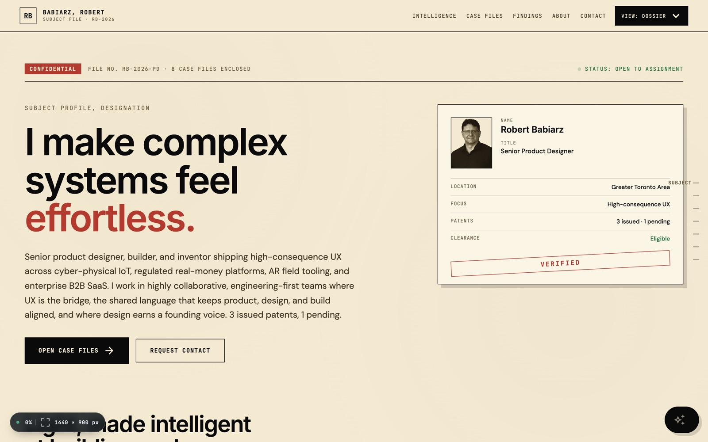
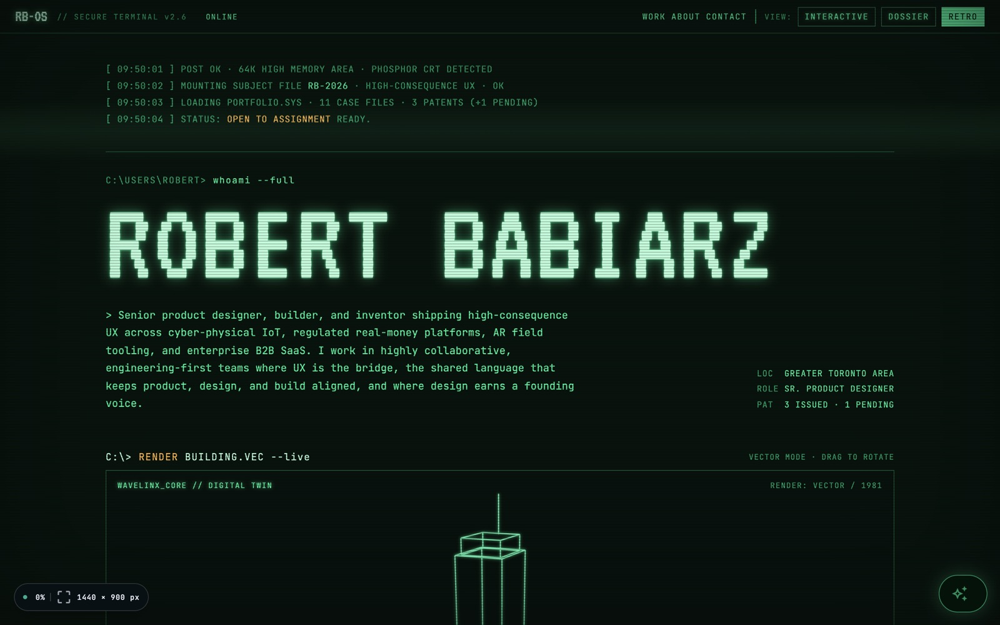
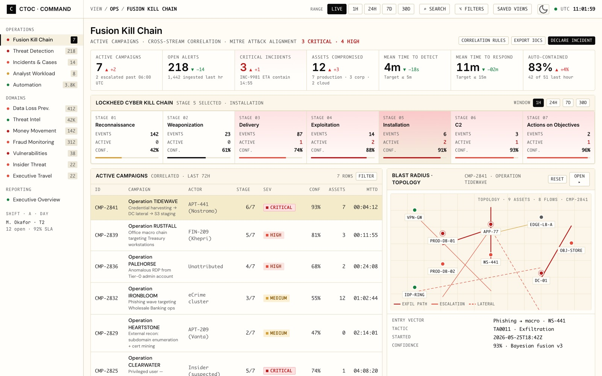
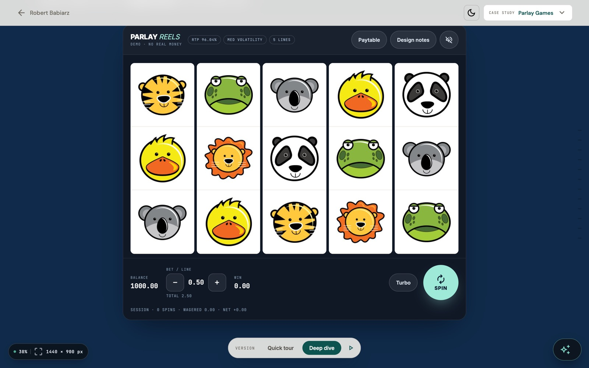
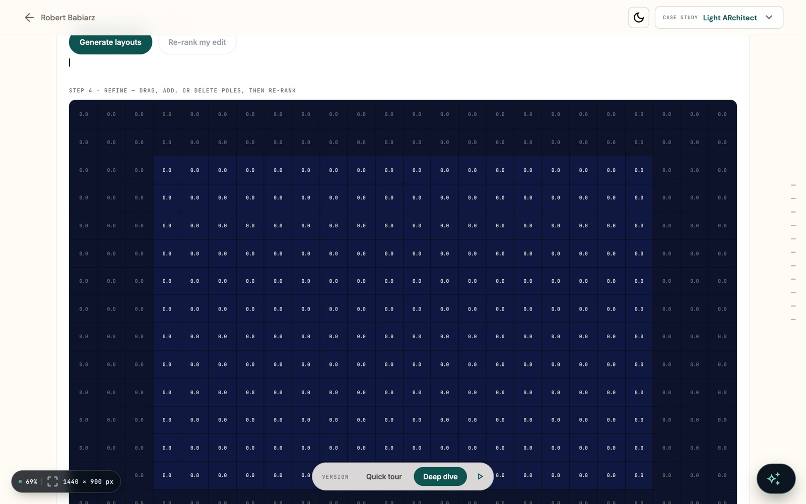
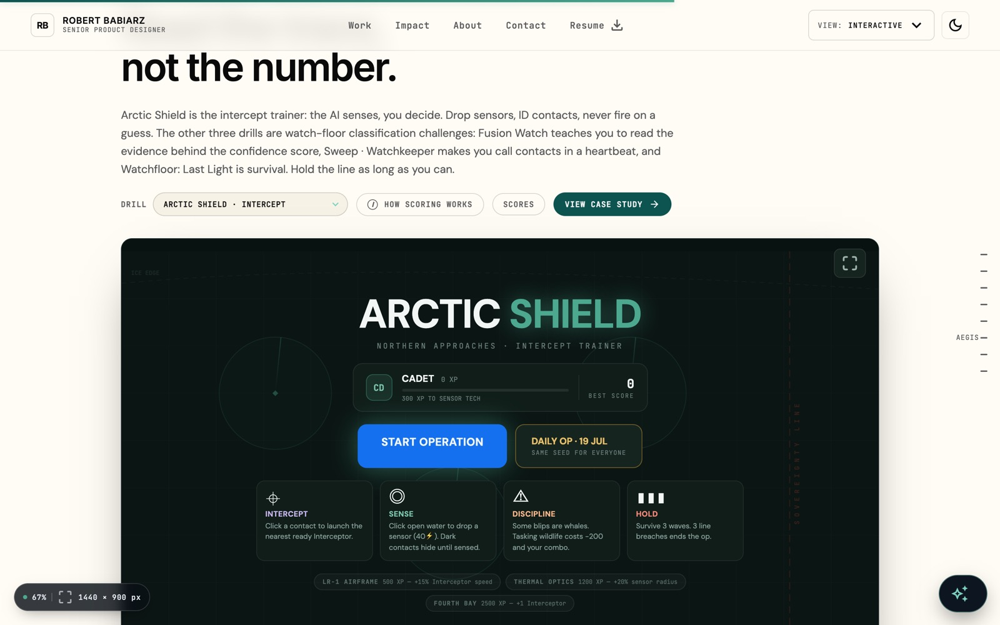
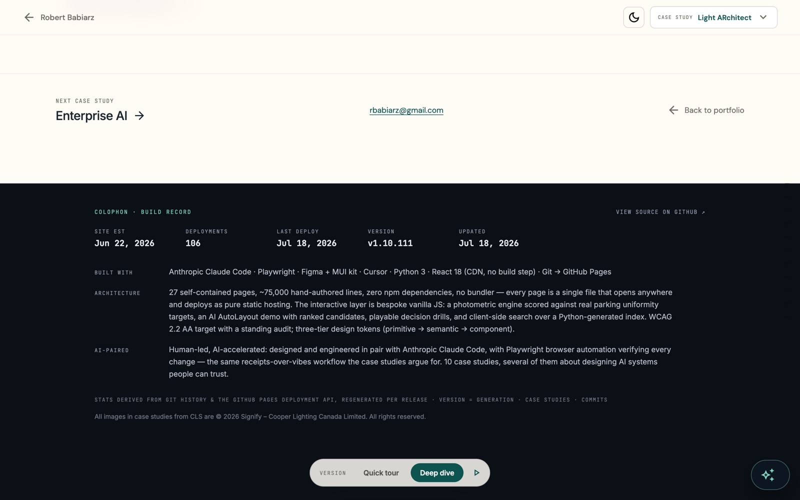

Portfolios assert. This one runs.
A portfolio that claims systems thinking should be a system you can inspect. Every page here is a single self-contained file — the research, the flows, the visual system, and the shipped code are one artifact with no handoff layer anywhere in it. The prototype is simultaneously the spec, the demo, and the production page.
It was built the way the industry is starting to work: a designer directing an AI pair against a machine-readable brief — the design rules live in the repo as working agreements — with browser automation verifying every change before it counts as done. The craft on display isn't just the screens. It's the discipline that produced them.
Three problems every senior portfolio has, solved structurally.
One system, three faces.
The homepage ships as three complete, switchable identities — architect-paper Interactive, classified-file Dossier, phosphor-CRT Retro — rendered by one discipline: one accent per screen, meaning never riding on hue alone, coral as the strongest risk signal, and every animation gated on reduced motion. The skin changes; the rules don't.


Tokens all the way down
232 token values in a three-tier mirror — primitive → semantic → theme — feed two runtime systems that share one discipline and one saved theme preference. The rule is written down and enforced: reference var(--…), never hardcode a hex. Even the one domain that needs a severity scale re-tints every value per theme.


Playable, not pictured.
Nine in-page simulations carry the case studies' claims as operable systems — a photometric sandbox, an AI layout generator, a mathematically honest slot machine, playable defence drills. Every one is dependency-free vanilla JS with a real keyboard path, screen-reader announcements, and an instant reduced-motion mode. You don't read about the interaction design; you operate it.



Built with an AI pair, gated by receipts
Claude Code works as a standing pair against a machine-readable brief — the design principles, token rules, accessibility bar, and content voice live in the repo as working agreements the model loads every session. Playwright then drives the real pages before any change counts as done. When an adversarial review of the slot's math found a 0.127-point RTP gap the Monte Carlo couldn't see, the process worked exactly as designed: the model brought receipts, the designer kept the decision.

Numbers with sources.
"The system's proof isn't a spec document. It's that the page you're reading renders from it."
Where the craft is going — and where this site already is.
Six movements are reshaping how design work gets made and judged. Each one is practiced here, not just cited.
The deep dive documents everything.
The token architecture with a live inspector reading this very page. The seven principles and where each is enforced. The AI-paired process, the bug the adversarial review caught, and a re-derivation of the slot's exact RTP that runs in your browser.